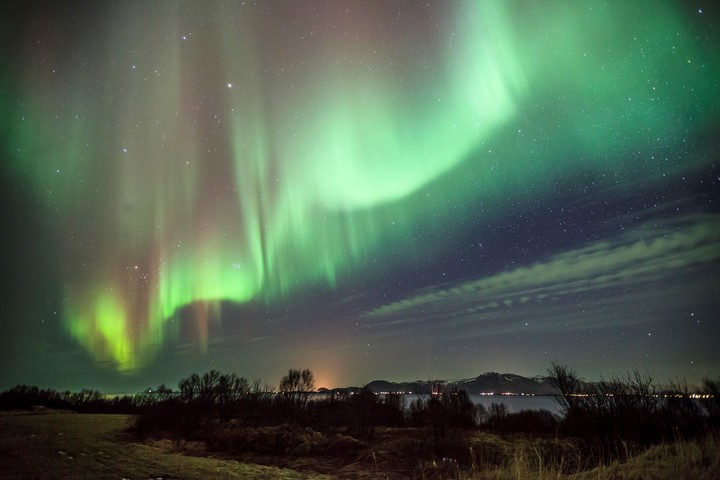

Escoge tus destinos y actividades favoritas, crea tu viaje, prepara tu itinerario y conoce la ruta de traslado de cuantos viajes quieras. |
Mucho que ofrecer al visitante que quiere experimentar y dejarse llevar por la magia de este país lleno de cultura, paisajes exuberantes y ciudades llenas de historia. Hay miles de razones para visitar México, pero solo necesitarás diez para animarte a viajar por esta tierra hospitalaria. |
El impresionante perfil de las montañas Rocosas inspira respeto y ganas de lanzarse a la aventura. Comparten sus paisajes los estados de Alberta y Columbia Británica y son el paraíso de los parques nacionales. |
Aventúrate a conocer un mundo diferente, lleno de colorido, música, paisajes de ensueño y una amplia gama gastronómica, atrévete a visitar Colombia. Descubre las cultural de sus ciudades a las cuáles no debes dejar de ir. |
Lleno de contrastes interesantes, como las cuatro estaciones del año, el sol de medianoche y la oscuridad del invierno, urbano y rural, oriente y occidente. |
 |
Si usted está buscando un viaje romántico para dos, con días de ocio dedicado a las orillas de arena dorada o de bajo presupuesto alojamientos para familias de aventura para toda la familia, la República Dominicana tiene todo. |